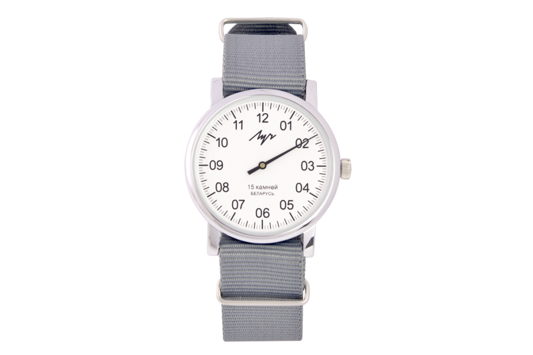
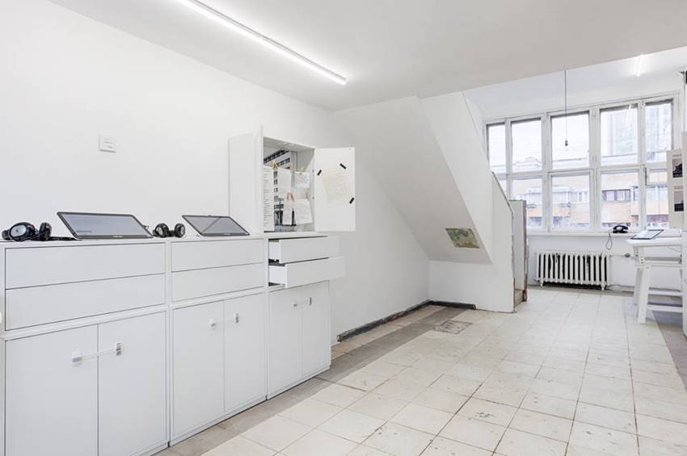
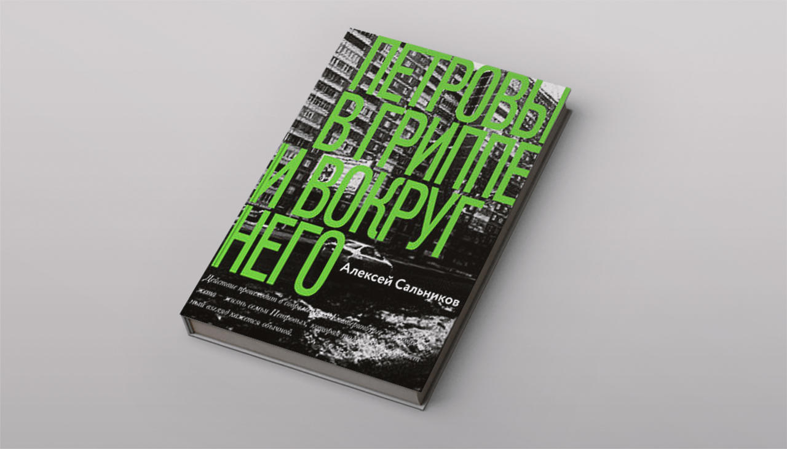
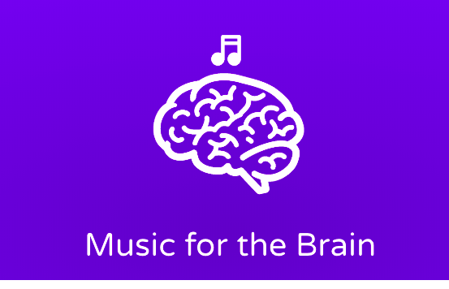

Советы и рекомендации
продукт
наручные часы
одежда
Однострелочные часы Луч
путешествие
Екатеринбург
Сходить на экскурсию в Ячейку F.
книги
Екатеринбург
Прочитать книгу «Петровы в гриппе и вокруг него» екатеринбургского писателя Алексея Сальникова.
концерт
Екатеринбург
музыка
Сходить на концерт группы Motorama 27 января
место
путешествие
Екатеринбург
Сходить на экскурсию в Водонапорную башню на Плотинке и выпить кофе на первом этаже башни.
Билеты -100 рублей. Билеты приобретаются на первом этаже. На втором встречает экскурсовод.
программы
музыка
продуктивность
Музыка, которая стимулирует мозг и помогает сконцентрироваться, расслабиться или уснуть. Использую сервис когда работаю и хочу сконцентрироваться. Музыка включается на 30 минут, один или два часа – таким образом я отмеряю время. Говорю себе, что сейчас в течение часа занимаюсь только определенной задачей и стараюсь не отвлекаться пока в наушниках есть звук.
